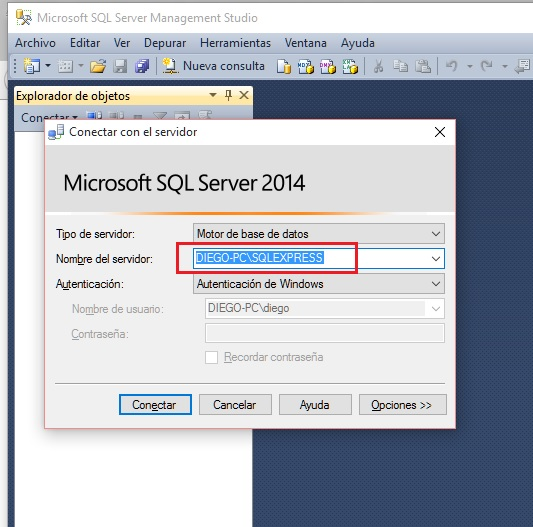
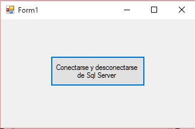
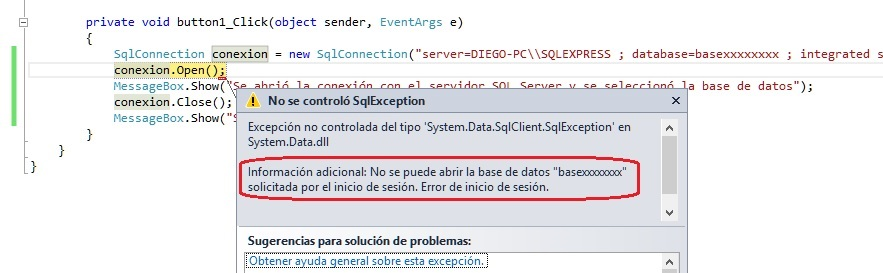

Desde .Net disponemos de un conjunto de clases para conectarnos y pedir al SQL Server que ejecute comandos.
El primer paso es conectarnos con nuestro servidor de base de datos que instalamos en los conceptos anteriores y vimos como podemos comunicarnos utilizando el Microsoft SQL Server Management Studio.
Problema
Confeccionar una aplicación que permita conectarnos con nuestro servidor de base de datos y seleccionar una determinada base de datos. Luego de la conexión cerrar la misma.
Para conectarnos con el servidor y seleccionar una base de datos debemos utilizar la clase SqlConnection:
SqlConnection conexion=new SqlConnection("server=DIEGO-PC\\SQLEXPRESS ; database=base1 ; integrated security = true");
El string que le pasamos al constructor del SqlConnection le indicamos como primer dato el nombre de nuestro servidor, en su máquina lo puede ubicar cuando arranca el SQL Server Management Studio:
Algo importante si su nombre incluye la barra "\" luego disponga dos seguidas ya que C# esta barra es un caracter de control y por lo tanto para disponer una debemos disponer "\\".
El segundo dato que se le pasa es el nombre de la base de datos con la que nos comunicaremos, en nuestro caso creamos previamente la base de datos "base1" y finalmente el último dato obligatorio es indicar "integrated security = true", esto hace que se utilice el usuario propio de Windows y no necesitemos por el momento crear otros usuarios propios de SQL Server.
Creemos un nuevo proyecto en Visual Studio y demos como nombre: BaseDatos1. La interfaz visual es un simple botón:
El código fuente es:
using System;
using System.Collections.Generic;
using System.ComponentModel;
using System.Data;
using System.Drawing;
using System.Linq;
using System.Text;
using System.Threading.Tasks;
using System.Windows.Forms;
using System.Data.SqlClient;
namespace PruebaBaseDatos1
{
public partial class Form1 : Form
{
public Form1()
{
InitializeComponent();
}
private void button1_Click(object sender, EventArgs e)
{
SqlConnection conexion = new SqlConnection("server=DIEGO-PC\\SQLEXPRESS ; database=base1 ; integrated security = true");
conexion.Open();
MessageBox.Show("Se abrió la conexión con el servidor SQL Server y se seleccionó la base de datos");
conexion.Close();
MessageBox.Show("Se cerró la conexión.");
}
}
}
Lo primero que hacemos es incluir el espacio de nombres:
using System.Data.SqlClient;
Este espacio de nombres define la clase SqlConnection.
Para el evento Click del button1 implementamos primero la creación de un objeto de tipo SqlConnection:
SqlConnection conexion = new SqlConnection("server=DIEGO-PC\\SQLEXPRESS ; database=base1 ; integrated security = true");
Abrimos la conexión:
conexion.Open();
Mostramos un mensaje que la conexión se abrió:
MessageBox.Show("Se abrió la conexión con el servidor SQL Server y se seleccionó la base de datos");
Cerramos la conexión:
conexion.Close();
Mostramos finalmente un mensaje del cierre de la conexión:
MessageBox.Show("Se cerró la conexión.");
Si aparece algún error es que especificó en forma incorrecta la cadena de conexión, por ejemplo si disponemos un nombre equivocado de servidor por ejemplo:
SqlConnection conexion = new SqlConnection("server= --------- ; database=base1 ; integrated security = true");
Luego debe detenerse nuestro programa indicando donde ocurrió el error:

También ocurrirá un error si disponemos un nombre de base de datos inexistente:
Si todo está correcto podemos seguir con los próximos conceptos para pedir que SQL Server ejecute comando y recuperar los resultados.